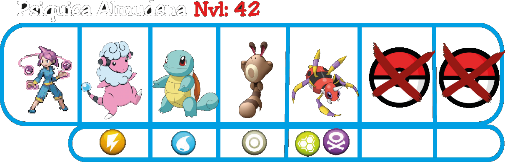
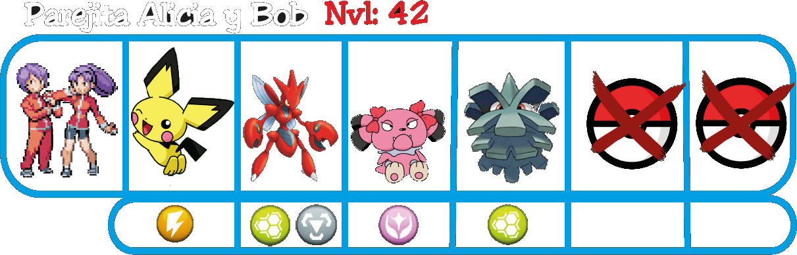

Ruta 4
En esta ruta predominan los combates dobles, además de que habrá un gran revuelo por un rumor difundido en los últimos días. Se dice que en esa ruta hay un camino oculto que lleva a una zona de grandes riquezas...
Siguiendo la ruta, te encontrarás con alguien que se ofrecerá a ayudarte en los combates dobles, si aceptas, luchará junto a ti y cuando se despida te dará un valioso regalo..
Después de hablar con Spider-Man, ve por el camino Este, encontrarás un objeto y una zona de hierbas perfecta para capturar el Pokemoito de esta zona.
Después, vuelve sobre tus pasos y ve por el camino Oeste, encontrándote con una entrenadora.
En el siguiente cruce, verás un pequeño arbusto en el lado Este, ahora con la Shusui podrás cortarlo y avanzar, encontrando un pequeño lago con un objeto inalcanzable por el momento y un nuevo enemigo.
Ahora vuelve a la zona anterior y esta vez avanza hacia el Norte, verás una zona inaccesible y tu única opción será combatir con una enemiga para poder avanzar y cortar otro arbusto.
Una vez derrotada, podrás cruzar los arbustos. Encontrarás una cueva bloqueada por un policia en el Este, mientras que por el Oeste continuarán los enemigos.
Si después de derrotar a la pareja continuas el camino hacia el Norte, encontrarás a tu Rival, que te dará una advertencia sobre lo que ha ocurrido en el siguiente pueblo y después luchareis.
Después de derrotarle, reconocerá tu fuerza y se irá. Si sigues sus pasos te encontrarás con un callejón sin salida, pero estarán las gafas del recepcionista que necesitabas para poder pasar al Parque Hierbajos, tendrás que derrotar al Pokemoito que las robó. Tras derrotarle, se unirá a tu equipo y obtendrás las gafas.
Con las gafas recuperadas ya tendrás acceso al Parque Hierbajos, pero de momento será mejor seguir avanzando para guardar el punto de vuelo en el siguiente pueblo. Te encontrarás con dos enemigos justo antes de llegar.